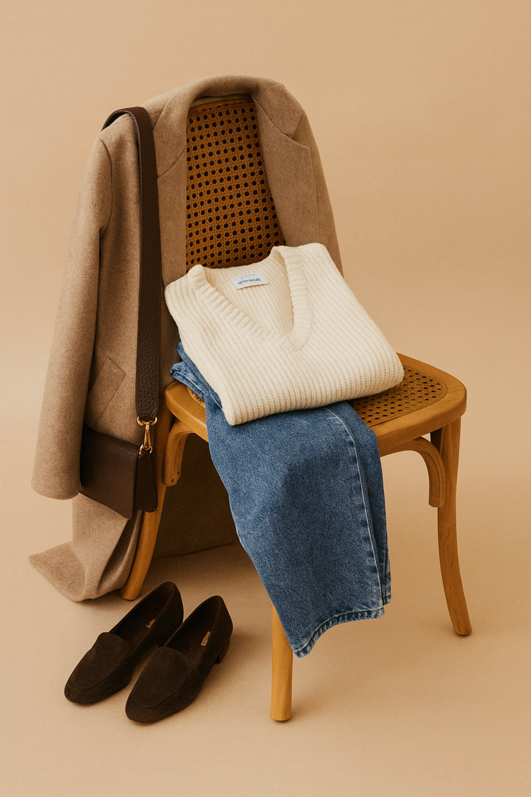

Lookiero Admin
La pestaña Dashboard te ofrece una colección de gráficos interactivos que facilitan el análisis de la información de manera rápida y clara.
La pestaña Looks muestra combinaciones de prendas generadas por nuestro grafo inteligente, diseñado para crear outfits coherentes y atractivos.
En la pestaña Modelo descubrirás la ciencia detrás de nuestras decisiones. Analizamos la eficacia de la segmentación y cómo variables físicas como la altura impactan en la satisfacción del cliente.
